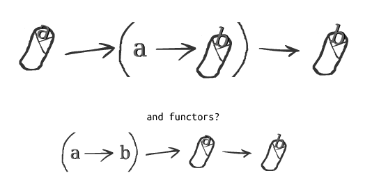

What's a Monad?
Jake Woods
What's this talk about?
Monads!
Notoriously tricky to understand.
Impossible to explain!
… I'm not going to teach you how to use them.
What's this talk about?
Monads?
What are they?
What aren't they?
Should I care?
So what's a Monad?
Something that's hard to learn!
Why?
"Monad" refers to lots of different concepts.
It's an overloaded term!
It's like trying to learn "Science"
You need to learn it bit-by-bit
Let's look at some types of "Monads"
An object with a flatMap method
[1,2,3].flatMap(a => [a, a]) // Returns [1,1,2,2,3,3]
A type with a bind function
-- >>= is pronounced bind in Haskell. Wat! [1,2,3] >>= \a -> [a, a] -- Returns [1,1,2,2,3,3]
Something I can use For/Do comprehension on
// Scala for { a <- Some(5) b <- Some(10) } yield a + b // Returns: Some(15)
-- Haskell do a <- Just 5 b <- Just 10 pure a + b -- Returns: Just 15
An interface/typeclass defining: join and pure
// Java-ish Monad<A> join(Monad<Monad<A>> nested); Monad<A> pure(A a);
// Scala def join(nested: Monad[Monad[A]]): Monad[A] def pure(a: A): Monad[A]
-- Haskell join :: (Monad m) => m (m a) -> m a pure :: (Monad m) => a -> m a
Example
For any Monad:
pure(1) // type: Monad<Int> pure(pure(1)) // type: Monad<Monad<Int>> join(pure(pure(1))) // type: Monad<Int>
For a concrete Monad:
List.pure(1) // type: List<Int> List.pure(List.pure(1)) // type: List<List<Int>> List.join(List.pure(List.pure(1)) // type: List<Int>
An interface/typeclass defining: bind and pure
// Java-ish Monad<B> bind<A,B>(Monad<A> a, Function<A, Monad<B>> fn); Monad<A> pure<A>(A a)
// Scala def bind[A,B](m: Monad[A], fn: A => Monad[B]): Monad[B] def pure[A](a: A): Monad[A]
-- Haskell bind :: (Monad m) => m a -> (a -> m b) -> m b pure :: (Monad m) => a -> m a
Example
For any Monad:
bind(pure(1), function(value) { return pure(value + 1) }); // Returns Monad(2)
For a concrete Monad:
List.bind(List.pure(1), function(value) { return List.pure("Hello"); }); // Returns ["Hello"] List.bind([1, 2, 3], function(value) { return pure("Hello " + value.toString) }); // Returns ["Hello 1", "Hello 2", "Hello 3"]
A Burrito?

A way of composing certain types of functions
Normal Function Composition
// Java-ish String toUpperCase(String input) { ... } String trim(String input) { ... } String toUpperCaseAndTrim(String input) { return compose(toUpperCase, trim)(input); }
// Scala def toUpperCase(input: String): String = ... def trim(input: String): String = ... def toUpperCaseAndTrim = compose(toUpperCase, trim)
-- Haskell toUpperCase :: String -> String trim :: String -> String toUpperCaseAndTrim = toUpperCase . trim
Monadic Function Composition
// Java-ish Promise<String> toUpperCase(String input) { ... } Promise<String> trim(String input) { ... } Promise<String> toUpperCaseAndTrimService(String input) { return monadCompose(toUpperCaseService, trimService)(input); }
// Scala def toUpperCase(input: String): Promise[String] = ... def trim(input: String): Promise[String] = ... def toUpperCaseAndTrim = monadCompose(toUpperCaseService, trimService)
-- Haskell toUpperCase :: String -> Promise String trim :: String -> Promise String -- The "fish" operator or Kleisil arrow does monad composition in Haskell toUpperCaseAndTrim = toUpperCase >=> trim
Something to do with Sequential Computations?
In most languages sequence is implied:
def main() = { // Executes doA then doB then doC and then returns a result val a = doA(); val b = doB(); val c = doC(); a + b + c }
But in some languages that isn't the case
-- Executes in an arbitrary order as everything is lazy main = let a = doA b = doB c = doC in a + b + c
Monads imply sequential computation
-- Executes doA then doB then doC and then returns a result main = do a <- doA b <- doB c <- doC pure a + b + c
Something for managing side effects?
In some languages we can freely mix side-effects into normal code:
def add(a: Int, b: Int): Int = { println("Hello World!") a + b }
But not in all languages
add :: Int -> Int -> Int add a b = do println "Hello World" -- ERROR! Doesn't compile a + b
Instead we have to mark side effecting functions with a type
add :: Int -> Int -> IO Int add a b = do println "Hello World" -- Compiles pure $ a + b
Those types are Monadic which makes them easy to compose!
"A Monoid in the category of Endofunctors"
They're all Monads!
No wonder they're so hard to learn…
Wait… Something is missing!
What about Maybe/List/Promise/Reader/Writer/State/Eff?
Well…
They are Monads!
But that's the boring bit about them.
Each of those types do something unique and valuable!
And it has nothing to do with Monads!
- Maybe implements the "Null" pattern
- List handles multiple values
- Promise handles asynchronous values
- Reader handles dependency injection
- Writer handles logging
- State handles arbitrary state
- Eff handles side effects
But they're all generic types
And we want to be able to compose them…
And that's when Monads are useful
So why should I care?
Something something design pattern
Something something learn one apply to lots of different types
The core definition of Monads is bind and pure
Everything else is clever tricks that use Monads t
In Summary
A Monad implies something that:
- Can use
flatMap,bindandpure - f
Thanks!
Questions?